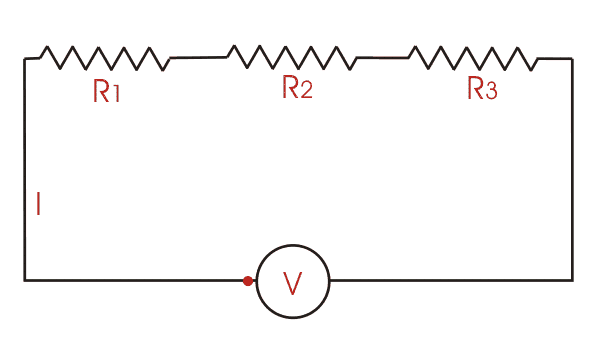
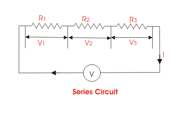
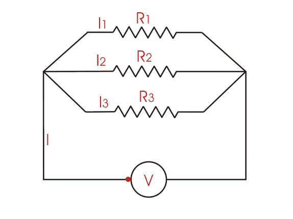
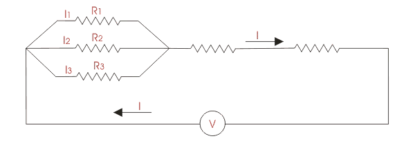

Definition of Electrical Circuit
DC Circuit
Series DC Circuit
Example of Series DC Circuit
Parallel DC Circuit
Example of Parallel DC Circuit
Series and Parallel Circuit
Electrical DC Circuit
Definition of Electrical Circuit
An electrical circuit is a combination of two or more electrical components which are interconnected by conducting paths. The components may be active or inactive or both. This is a very basic definition of electrical circuit.
DC Circuit
There are two types of electricity - direct electric current and alternating current, i.e, DC and AC. The circuit that deals with direct electric current or DC, is referred as DC circuit and the circuit that deals with alternating current or AC, is generally referred as AC Circuit. The components of the electrical DC circuit are mainly resistive, whereas components of the AC circuit may be reactive as well as resistive. Any electrical circuit can be categorized into three different groups - series, parallel and series parallel. So for example, in the case of DC, the circuits can also be divided into three groups, such as series DC circuit, parallel DC circuit and series and parallel circuit.
Series DC Circuit
When all the resistive components of a DC circuit are connected end to end to form a single path for flowing electric current , then the circuit is referred as series DC circuit. The manner of connecting components end to end is known as series connection.
Suppose we have n number of resistors R1, R2, R3............Rn and they are connected in end to end manner, means they are series connected. If this series combination is connected across a voltage source, the electric current starts flowing through that single path. As the resistors are connected in end to end manner, the electric current first enters in to R1, then this same electric current comes in R2, then R3 and at last it reaches Rn from which the electric current enters into the negative terminals of the voltage source . In this way, the same electric current circulates through every resistor connected in series. Hence, it can be concluded that in a series DC circuit, the same electric current flows through all parts of the electrical circuit.
Again according to Ohm’s law , the voltage drop across a resistor is the product of its electrical resistance and the electric current flow through it. Here, electric current through every resistor is the same, hence the voltage drop across each resistor's proportional to its electrical resistance value. If the resistances of the resistors are not equal then the voltage drop across them would also not be equal. Thus, every resistor has its individual voltage drop in a series DC circuit.
|  |
| The flow of electric current is shown here by a moving point. This is just a conceptual representation. |
An Example of Series DC Circuit
Suppose three resistors R1, R2 and R3 are connected in series across a voltage source of V (quantified as volts) as shown in the figure. Let electric current I (quantified as Ampere) flow through the series circuit. Now according to Ohm’s law ,
Voltage drop across resistor R1, V1 = IR1
Voltage drop across resistor R2, V2 = IR2
Voltage drop across resistor R3, V3 = IR3
Voltage drop across whole series DC circuit,
V = Voltage drop across resistor R1 + voltage drop across resistor R2 + voltage drop across resistor R3

According to Ohm’s law , the electrical resistance of an electrical circuit is given by V ⁄ I and that is R. Therefore,
So, effective resistance of the series DC circuit is R = R1 + R2 + R3. From the above expression it can be concluded, that when a number of resistors are connected in series, the equivalent resistance of the series combination is the arithmetic sum of their individual resistances.
From the above discussion, the following points come out:
- When a number of electrical components are connected in series, the same electric current flows through all the components of the circuit.
- The applied voltage across a series circuit is equal to the sum total of voltage drops across each component.
- The voltage drop across individual components is directly proportional to its resistance value.
Parallel DC Circuit
When two or more electrical components are connected in a way that one end of each component is connected to a common point and the other end is connected to another common point, then the electrical components are said to be connected in parallel, and such an electrical DC circuit is referred as a parallel DC circuit. In this circuit every component will have the same voltage drop across them, and it will be exactly equal to the voltage which occurs between the two common points where the components are connected. Also in a parallel DC circuit, the electric current has several parallel paths through these parallel connected components, so the circuit electric current will be divided into as many paths as the number of components.
Here in this electrical circuit, the voltage drop across each component is equal. Again as per Ohm’s law , voltage drop across any resistive component is equal to the product of its electrical resistance and electric current through it. As the voltage drop across every component connected in parallel is the same, the electric current through them is inversely proportional to its resistance value.
|  |
| The flow of electric current is shown here by a moving point. This is just a conceptual representation. |
An Example of Parallel DC Circuit
Suppose three resistors R1, R2 and R3 are connected in parallel across a voltage source of V (volt) as shown in the figure. Let I (Ampere) be the total circuit electric current which is divided into electric current I1, I2 and I3 flowing through R1, R2 and R3 respectively. Now according to Ohm’s law :
Voltage drop across resistor R1, V = I1.R1
Voltage drop across resistor R2, V = I2.R2
Voltage drop across resistor R3, V = I3.R3
Voltage drop across whole parallel DC circuit,
V = Voltage drop across resistor R1 = voltage drop across resistor R2 = voltage drop across resistor R3
⇒ V = I1.R1 = I2.R2 = I3.R3
I = I1 + I2 + I3 and as per Ohm’s law , I = V ⁄ R hence,
Thus when a number of resistors are connected in parallel, the reciprocal of the equivalent resistance is given by the arithmetic sum of the reciprocals of their individual resistances.
From the above discussion of parallel DC circuit, we can come to the following conclusion:
- Voltage drops are the same across all the components connected in parallel.
- Current through individual components connected in parallel, is inversely proportional to their resistances.
- Total circuit electric current is the arithmetic sum of the currents passing through individual components connected in parallel.
- The reciprocal of equivalent resistance is equal to the sum of the reciprocals of the resistances of individual components connected in parallel.
Series and Parallel Circuit
So far we have discussed series DC circuit and parallel DC circuit separately, but in practice, the electrical circuit is generally a combination of both series circuits and parallel circuits. Such combined series and parallel circuits can be solved by proper application of Ohm’s law and the rules for series and parallel circuits to the various parts of the complex circuit.
|  |
 by
by